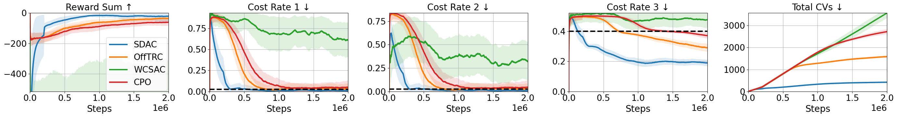
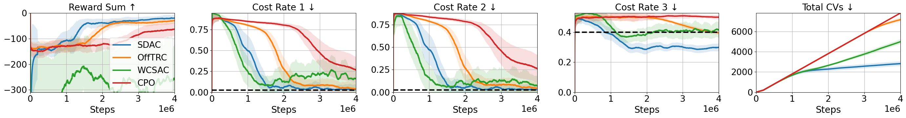

Quadrupeds
Forward Command (left: SDAC, middle: OffTRC, right: WCSAC)

Turn-Forward Command (left: SDAC, middle: OffTRC, right: WCSAC)

In safety-critical robotic tasks, potential failures must be reduced, and multiple constraints must be met, such as avoiding collisions, limiting energy consumption, and maintaining balance. Thus, applying safe reinforcement learning (RL) in such robotic tasks requires to handle multiple constraints and use risk-averse constraints rather than risk-neutral constraints. To this end, we propose a trust region-based safe RL algorithm for multiple constraints called a safe distributional actor-critic (SDAC). Our main contributions are as follows: 1) introducing a gradient integration method to manage infeasibility issues in multi-constrained problems, ensuring theoretical convergence, and 2) developing a TD(λ) target distribution to estimate risk-averse constraints with low biases. We evaluate SDAC through extensive experiments involving multi- and single-constrained robotic tasks. While maintaining high scores, SDAC shows 1.93 times fewer steps to satisfy all constraints in multi-constrained tasks and 1.78 times fewer constraint violations in single-constrained tasks compared to safe RL baselines.
We demonstrate the behavior of trained agents in the locomotion tasks where three constraints are considered: 1) keeping body balance, 2) maintaining CoM height, and 3) maintaining foot timing.
Forward Command (left: SDAC, middle: OffTRC, right: WCSAC)
Turn-Forward Command (left: SDAC, middle: OffTRC, right: WCSAC)
Forward Command (left: SDAC, middle: OffTRC, right: WCSAC)

Turn-Forward Command (left: SDAC, middle: OffTRC, right: WCSAC)

Quadrupeds (blue: SDAC, orange: OffTRC, green: WCSAC, red: CPO)
Bipeds (blue: SDAC, orange: OffTRC, green: WCSAC, red: CPO)
@inproceedings{
kim2023sdac,
title={Trust Region-Based Safe Distributional Reinforcement Learning for Multiple Constraints},
author={Dohyeong Kim and Kyungjae Lee and Songhwai Oh},
booktitle={Thirty-seventh Conference on Neural Information Processing Systems},
year={2023},
url={https://openreview.net/forum?id=q9WMXjUxxT}
}